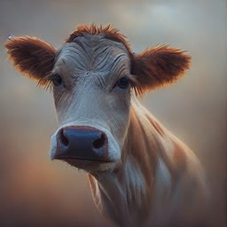
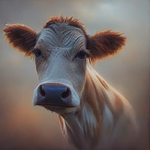

Training Diffusion Models with Reinforcement Learning

UPDATE: We now have a PyTorch implementation that supports LoRA for low-memory training here!
Summary
We train diffusion models directly on downstream objectives using reinforcement learning (RL). We do this by posing denoising diffusion as a multi-step decision-making problem, enabling a class of policy gradient algorithms that we call denoising diffusion policy optimization (DDPO). We use DDPO to finetune Stable Diffusion on objectives that are difficult to express via prompting, such as image compressibility, and those derived from human feedback, such as aesthetic quality. We also show that DDPO can be used to improve prompt-image alignment without any human annotations using feedback from a vision-language model.

We use feedback from a large vision-language model, LLaVA, to automatically improve prompt-image alignment.
Results
We first evaluate our method on a few basic reward functions: compressibility, incompressibility, and aesthetic quality as determined by the LAION aesthetic predictor.
 


Prompt-Image Alignment
We also optimize a more ambitious reward function: prompt-image alignment as determined by the LLaVA vision-language model. We use animals doing human-like activites, since the base Stable Diffusion model tends to struggle with these kinds of prompts. Each series of 3 images shows samples for the same prompt and random seed throughout training, with the first sample coming from the base model. Interestingly, the model shifts towards a more cartoon-like style, which was not intentional. We hypothesize that this is because animals doing human-like activities are more likely to appear in a cartoon-like style in the pretraining data, so the model shifts towards this style to more easily align with the prompt.


Generalization: Aesthetic Quality
Unexpected generalization has been found to arise when finetuning large language models with RL: for example, models finetuned on instruction-following only in English often become better in other languages. We find that the same phenomenon occurs with text-to-image diffusion models. Our aesthetic quality model was finetuned using prompts from a list of 45 common animals. We find that it generalizes to unseen animals, as well as everyday objects (to a slightly lesser extent).
Generalization: Prompt-Image Alignment
Our prompt-image alignment model was finetuned using the same list of 45 common animals and only 3 activities: riding a bike, washing dishes, and playing chess. However, we find that it generalizes not only to unseen animals, but also to unseen activities and even novel combinations of the two. It also generalizes to inanimate objects, though to a much more limited extent. Each series of 3 images again shows samples for the same prompt and random seed throughout training, with the first sample coming from the base model.


Overoptimization
Finetuning on a reward function, especially a learned one, has been observed to lead to reward overoptimization in which the model exploits the reward function to achieve a high reward in a non-useful way. Our setting is no exception: on all the objectives, the model eventually destroys any meaningful image content to maximize reward.
We also observed that LLaVA is susceptible to typographic attacks: when optimizing for alignment with respect to prompts of the form "n animals", DDPO was able to successfully fool LLaVA by instead generating text loosely resembling the correct number.